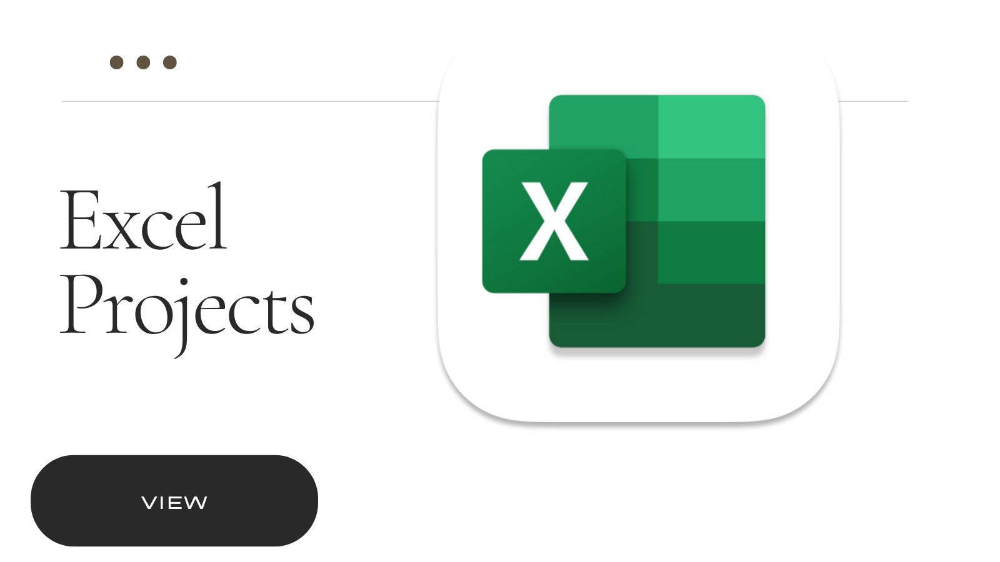

Take Note
The projects demonstrate the skills of using different tools to tranform raw data into useful insights with the core focus on solving a problem.
The projects use Excel and Google Sheets for smaller datasets, the Power Platform with particular focus on Power BI , programming languages R and Python from Webscraping to creation of Data Viz, SQL for data exploration and manipulation, as well as telling stories in form of charts and dashboards using Tableau.

This is a project examines Covid 19 pandemic since Jan 2020 till Nov 2022 done using Jupyter Notebooks and Python code to perform exploratory data analysis to see the trends that occured and answer certain questions.
This is a final interactive dashboard built using R to show insights observed after performing data exploration about Covid 19 data from WHO public dataset with the time range from Jan 2020 till Nov 2022.
This directory contains Jupyter notebooks stored on github with a Tableau link with a dashboard showcasing the Cholera pandemic that happened in Malawi during Feb to Jul 2022 with a report indicating cases, risk factors, age groups as well as districts mainly affected.

Since Excel is still one of the most powerful tools, some projects and advanced interactive dashboards were also executed using Excel. Amongst such projects include that to do with Suicide rates.
This project uses an already available dataset about smart devices provided by the Google Data Analytics Certificate Program team with a project
scenario dealt with using R Markdown. The project's aim is to try to identify data insights about the smart devices clients usage inorder to try to improve the health of women
This is also part of the Google Analytics Certificate Program where Tableau was put into practice to identify the major causes of happiness worldwide with Economy, Generosity, Health and Family identified and looked into closely as potential causes.
This project depicts how a whole organizational project is carried out starting from the problem statement, defined data source, usage of AIMs grid by project managers, SQL for Data exploration and analysis, and finally reporting using Power BI
This project showcases the use of model development to make predictions about house prices from a dataset taken on Kaggle about Houses and related properties.
This project mainly comprises of webscraping the IMDB top movies, cleaning the dataset into proper tables, and finally analyzing it using Python code.
This directory contains various projects standalone or associated within other projects particularly where Tableau was used to create visuals .